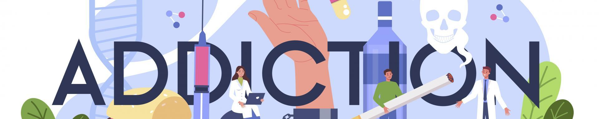

What are addictions ?
Addiction is a neuropsychological disorder characterized by persistent use of a drug, despite substantial harm and other negative consequences. Repetitive drug use often alters brain function in ways that perpetuate craving, and weakens (but does not completely negate) self-control. This phenomenon, (drugs reshaping brain function), has led to an understanding of addiction as a brain disorder with a complex variety of neurobiological and psychosocial factors that are implicated in addiction's development. Classic signs of addiction include compulsive engagement in rewarding stimuli, preoccupation with substances or behavior, and continued use despite negative consequences. Habits and patterns associated with addiction are typically characterized by immediate gratification (short-term reward), coupled with delayed deleterious effects (long-term costs).
Examples of drug and behavioral addictions include alcohol use disorder, marijuana addiction, amphetamine addiction, cocaine addiction, nicotine addiction, opioid addiction, video game addiction, gambling addiction, and sexual addiction. The only behavioral addiction recognized by the DSM-5 and the ICD-10 is gambling addiction. With the introduction of the ICD-11 gaming addiction was appended. The term "addiction" is frequently misused when referring to other compulsive behaviors or disorders, particularly dependence, in news media. An important distinction between drug addiction and dependence is that drug dependence is a disorder in which cessation of drug use results in an unpleasant state of withdrawal, which can lead to further drug use. Addiction is the compulsive use of a substance or performance of a behavior that is independent of withdrawal. Addiction can occur in the absence of dependence, and dependence can occur in the absence of addiction, although the two often occur together.
Source: Wikipedia